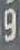
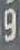
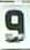
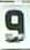

1. Neural Network Types
Note
For an overview, see Choosing the Model.
This section is describing the different types of neural networks, that are used with the AI-on-the-edge approach and gives an introduction on how and where to use them.
1.1 Overview neural network type
There are two types of input:
-
digits with rolling number (top town)
-
analog pointers (clockwise rotating pointer)
There are two types of neural networks:
- classification networks with discrete output neurons for each result class:
- 11 classes for digits (0, 1, ... 8, 9 + "Not-A-Number")
- 100 classes for digits or analog pointers (0.1, 0.2, 0.3, ... , 9.7, 9.8, 9.9)
- continuous output networks with a continuous output in the interval [0, 10[
No setting of the type in the firmware is necessary. The type can detect by the output structure automatically.
Warning
- It is very important to choose the right network type (digits or analog pointers). Technically a wrong network will work and create output, but that would be totally arbitrary
- Not all type of pointers are trained in all networks.
- For the 11 classes digits network there many different types of digits trained. The reason is, that you 1) only need 20-30 training images and 2) the data collection is ongoing much longer
- For the continuous and 100 classes network especially for the digits, there are only a few types of digits trained up to now
- Therefore sometimes for the digits it is more effective to choose the simpler 11 classes network type (= default).
1.2 Naming convention
| Classification 11 classes 0, 1, ... 9 + "N" |
Classification 100 classes 0.0, 0.1, ... 9.9 |
Continuous Interval [0, 10[ |
|
|---|---|---|---|
Digits  |
dig-class11_XXX.tflite | dig-class100_XXX.tflite | dig-cont_XXX.tflite |
Analog Pointers  |
ana-class100_XXX.tflite | ana-cont_XXX.tflite |
XXX contains the versioning and a parameter for different sizes with the following naming:
XXX = versioning_sY
-
versioning = version or in newer networks the training data
-
Y = Neural network size (typically s1, s2, ..., s4). Whereas s1 is the maximum sized neural network and s4 is the smallest.
Optional the naming ends with an "_q" to signal, that the tflite file has been quantized (size reduction with minimum accuracy loss).
Example: dig-class11_1410_s2_q.tflite
- Classification network for digits with 11 classes (0, 1, 2, 3, 4, 5, 6, 7, 8, 9, N)
- Version 1410 = 14.1.0
- s2 = Size 2 (Medium)
- q = Quantized Version
1.3 Overview of trained types and details
1.3.1 Analog Pointer ("ana-cont_XXX.tflite" & "ana-class100_XXX.tflite")
This is to transfer the direction of a pointer into a continuous number between 0 and 1, whereas 0 (=1) is the upwards position (12 o'clock), 0.25 corresponds to the 3 o'clock positions and so on. This network is a envelop for all different types of pointers. Currently there are no dedicated network trainings for specific types of pointers.
There are two types of network structure, currently both are supported. The "class100" is a pure classification network, that might need a bit more accuracy in the labeling. "cont" is a no classic approach with a continuous output off only 2 neurons (details see below).
1.3.1.1 Types of counters trained:
 |
 |
 |
 |
 |
 |
 |
1.3.1.2 Training data needs
- Quadratic images, minimum size: 32x32 pixel
- Typically 100 - 200 images with a resolution of 1/100 of the full rotation (every 0.1 value or 3.6°)
- Naming: x.y_ARBITRARY.jpg, where x.y = value 0.0 ... 9.9
1.3.1.3 CNN Technical details:
1.3.1.3.1 Input
- 32 x 32 RGB images
1.3.1.3.2 Output
- ana-cont_XXX.tflite:
- 2 neurons with output in range [-1, 1] - representing a sinus / cosine encoding of the angle
-
needs to be converted to angle with arctan-hyperbolic function
-
ana-class100_XXX.tflite
- 100 neurons representing the classes from 0.0, 0.1, ... 9.8, 9.9
1.3.2 Digits with 11 classes ("dig-class11_XXX.tflite")
The digit type is a classical classification network, with 11 classes representing the numbers 0, 1, ... 9 and the special class "N". It is trained for the rolling ring of gas and electric meters. As there is sometime a status between two images, the special class "N" is representing Not-A-Number for the case, that the image cannot be unique classified to one number e.g. because it is between two digits. For this type the lowest amount of training data per type is needed, resulting in a large variety of type being already part of the training set.
1.3.2.1 Types of counters trained:
 |
 |
 |
 |
 |
 |
 |
 |
 |
 |
 |
 |
 |
1.3.2.2 Training data needs
- RGB images, with minimum size: 20x32 pixel
-
Typically 10 - 20 images (1-2 for each digit and an arbitrary number for the "N" class
-
Naming: x_ARBITRARY.jpg, where x = value 0 ... 9 + N
1.3.2.3 CNN Technical details:
1.3.2.3.1 Input
- 20 x 32 RGB images
1.3.2.3.2 Output
- 11 neurons for image classification (last layer normalized to 1)
- Neuron 0 to 9 represent the corresponding numbers "0" to "9"
- Neuron 10 represents the "Not-A-Number" class, telling, that the image is not uniquely classified
1.3.3 Digits with rolling results ("dig-class100_XXX.tflite" & "dig-cont_XXX.tflite")
This type of network tries to overcome the problem, that there are intermediate values, when a rolling digit is between two numbers. Previous this was the "N" class. In this network type, there are also sub-digit values trained, so that the intermediate state can be used as additional information for the algorithms.
1.3.3.1 Types of counters trained:
   |
    |
1.3.3.2 Training data needs
- RGB images, with minimum size: 20x32 pixel
-
Typically 100 - 200 images (1-2 for each possible position)
-
Naming: x.y_ARBITRARY.jpg, where x.y = 0.0, 0.1, ... 9.9 representing the intermediate state
1.3.3.3 CNN Technical details:
1.3.3.3.1 Input
- 20 x 32 RGB images
1.3.3.3.2 Output
- dig-cont_XXX.tflite:
- 10 neurons representing the digits 0, 1, ... 9. The intermediate values are represented by weighted normalized values of two neighboring output neurons
-
needs to be converted to angle with arctan-hyperbolic function
-
dig-class100_XXX.tflite
- 100 neurons representing the classes from 0.0, 0.1, ... 9.8, 9.9